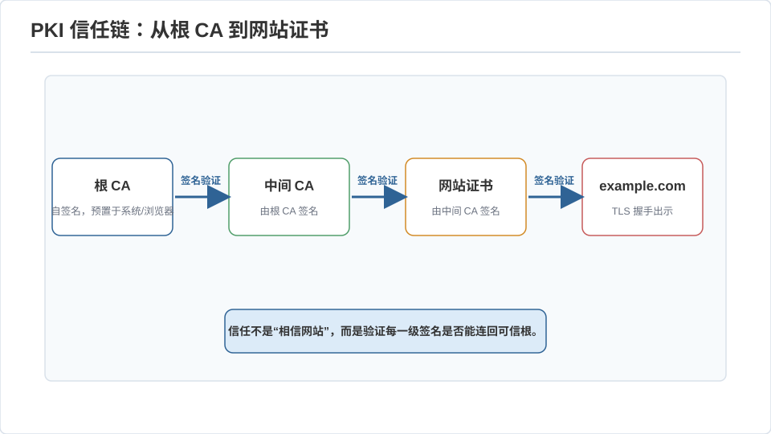
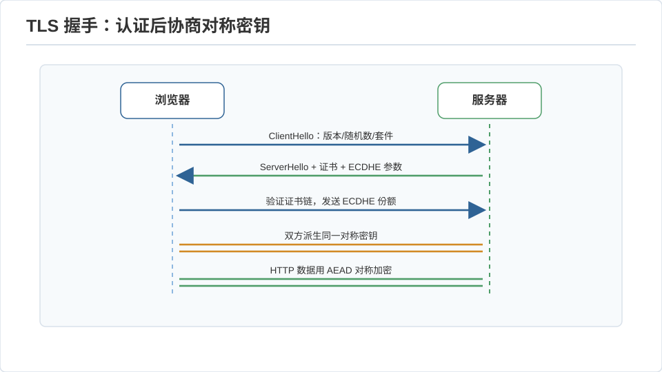
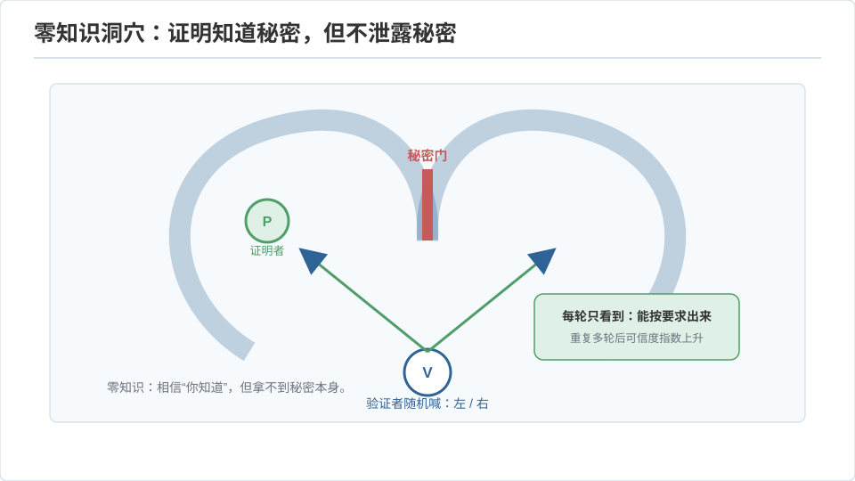

密码学 II · 协议、零知识与后量子
对标：Boneh–Shoup 后半 / Katz–Lindell 协议章 / NIST PQC ｜ 前置：crypto-01、toc-02（IP=PSPACE）、physics 站 qi 线（Shor） 单次加密只是起点。真实世界要的是协议——互不信任的多方在敌意网络上达成可信结果。这一页走三段：日常协议（TLS/签名/证书如何拼出你浏览器的锁图标）、零知识证明（证明"我知道"却不泄露）、后量子密码（Shor 算法把 RSA/ECC 判了死缓，怎么办）。
1. 数字签名与 PKI：信任怎么落地
数字签名：私钥签、公钥验——只有私钥持有者能产生、任何人能验证（与加密的公私钥用法相反）。RSA 签名 = 对消息哈希做私钥运算；ECDSA/EdDSA 是椭圆曲线版。签名给出认证 + 不可否认性。
但公钥怎么信？ ——公钥基础设施 PKI：证书是"CA（证书颁发机构）用自己私钥签名的'这个公钥属于 example.com'的声明"。你的浏览器内置一批根 CA 公钥，靠信任链（根 CA 签中间 CA 签网站）验证。这是"信任的委托"：你不认识网站，但你信 CA，CA 担保网站。Web 信任的软肋也在此——任一 CA 被攻破就能伪造证书（故有 Certificate Transparency 公开日志监督）。

TLS 握手（你每次 https 都在跑）【骨架】：① 协商套件；② 用 DH/ECDH 交换出会话密钥（crypto-01）——前向保密（每次会话新密钥，私钥日后泄露也不能解旧流量）；③ 服务器用证书 + 签名证明身份；④ 之后用对称密钥（AES-GCM）加密数据。公钥密码建立信任 + 交换密钥，对称密码扛数据吞吐——一次握手把两代密码学的长处拼在一起（🔗 net-02 会从网络分层角度再看一遍 TLS）。

2. 零知识证明：证明"我知道"而不说出来
目标：证明者让验证者相信一个命题为真，除"真"之外不泄露任何信息。三性质：完备（真命题能证）、可靠（假命题证不了，soundness）、零知识（验证者学不到额外信息——形式化为"验证者能自己模拟出整个对话")。
直觉例子（阿里巴巴洞穴）：环形洞穴分左右两条路、中间一道密码门。证明者进洞，验证者在洞口喊"从左边出来"或"从右边出来"。若证明者真知道密码，每次都能按要求出来；若不知道，只有 50% 蒙对——重复 \(n\) 次，蒙混概率 \(2^{-n}\)。验证者确信"他知道密码"，却始终不知道密码是什么。这就是交互式零知识（🔗 toc-02 的 IP=PSPACE 是它的理论母体）。

现代形态 zk-SNARK / zk-STARK：非交互、简洁（证明短、验证快）的零知识——证明"我正确执行了某段计算"而不暴露输入。应用爆发：隐私区块链（证明交易合法不暴露金额）、Layer-2 rollup（把上万笔交易压成一个简短证明，扩容以太坊）、可验证计算（把计算外包给不可信服务器、拿回一个能验的证明）。这是密码学当下最热的工程前沿之一。
3. 安全多方计算与同态加密（一瞥）
- 安全多方计算 MPC：多方各持私密输入，共同算出函数值而不泄露各自输入（姚氏百万富翁问题：两人比谁富而不说出身家）。用混淆电路 / 秘密分享实现。用于隐私保护的联合数据分析。
- 同态加密 FHE：在密文上直接计算，解密后等于对明文计算的结果——"把加密数据交给云、云算完还给你、云全程看不到明文"。Gentry 2009 首个方案，至今在为效率苦战，但已在隐私 ML 推理等场景落地。"数据可用不可见"是这两项技术的共同愿景。
4. 后量子密码：Shor 来敲门
危机：Shor 量子算法（🔗 physics 站 qi-02）能在多项式时间内分解大整数、求离散对数——RSA、DH、ECC 全部被量子计算机秒破。虽然大规模容错量子计算机尚未造出，但"现在窃取密文、将来量子解密"（harvest-now-decrypt-later）的威胁已经现实，敏感数据需提前迁移。
出路——后量子密码（PQC）：换到量子也难的数学问题上： - 格密码（lattice）：最短向量问题（SVP）——量子也没有已知高效解。NIST 2024 标准化的 ML-KEM（Kyber）密钥封装、ML-DSA（Dilithium）签名都是格基。 - 另有基于哈希的签名（SPHINCS+，抗量子且假设最少）、编码密码等。
读法：密码学的安全永远是"相对于当前已知算法与硬件"的动态契约——量子计算逼着整个 PKI 换地基，这是正在发生的十年级迁移。Shor 之所以能破，正因为分解/离散对数是 NP-中间而非 NP 完全（toc-02）——格问题被押注为下一个安身之所。
5. 练习与要点
例 1（签名 vs 加密别搞反） 想让"只有我能发、人人能验"用签名（私钥签）；想让"人人能发给我、只有我能读"用加密（公钥加密）。公私钥的两种对称用法，一张图记死，是密码学入门最常见的混淆点。
例 2（零知识的可靠性数感） 洞穴协议重复 20 次，冒充者蒙混概率 \(2^{-20}\approx 10^{-6}\)——"重复交互把作弊概率指数压小"和 algo-03 的 Chernoff、adv-01 的草图放大是同一种概率放大术。
例 3（迁移的现实判断） 你的 Medusa 若长期存加密敏感数据，该关心 PQC 吗？答：取决于数据的"保密寿命"——若十年后泄露也无所谓则不急，若涉长期隐私则应关注 TLS 库的 PQC 支持（现代 OpenSSL/浏览器已在部署混合密钥交换）。安全决策是"威胁 × 时间窗 × 成本"的工程权衡，不是非黑即白。\(\blacksquare\)
理论线到此为止。下一页进入系统线主体——CSAPP I：程序在机器眼里到底长什么样。